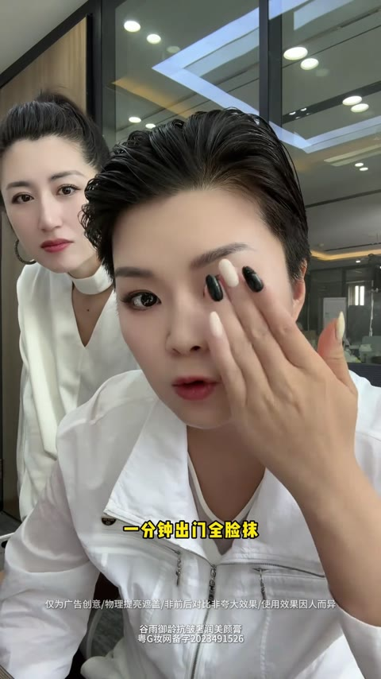
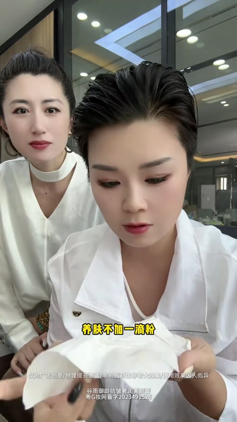
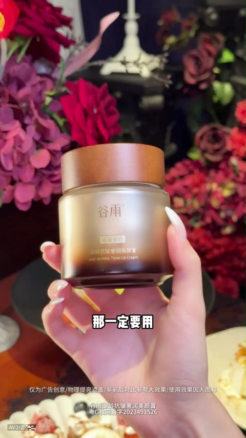

📊 指标均值 · 清晰呈现本类素材基准指标，帮你快速定位差距，校准优化方向
消耗(均值)
—增长量(均值)
—CTR (均值)
1.99%CVR (均值)
10.55%3s完播 (均值)
47.5%播放时长(均值)
11.9s📚 方法论沉淀 · 拆解开篇类型核心打法，吃透爆款底层逻辑，轻松拿捏创作节奏
🎬开篇方式细分· 还原头部素材的爆款开篇套路，直接参考高起量创作范式（推荐指数=消耗量级）
明星背书类⭐⭐⭐⭐⭐
以秦岚、刘晓庆、董璇、赵雅芝等明星出镜口播或推荐为开篇，借助明星影响力快速建立信任感，配合'年龄成谜''冻龄秘诀'等话术精准触达熟龄女性，消耗表现最优，素材#12消耗32.6万领跑全品类
痛点开篇类⭐⭐⭐⭐⭐
以'粉底液显老''卡粉斑驳''脸垮暗沉'等痛点场景切入，通过左右脸对比、纸巾擦拭测试等视觉冲击制造悬念，快速引发用户共鸣，素材#1/#4消耗均超14万，跑量稳定
达人种草类⭐⭐⭐⭐
以达人人设vlog、极端测评、多博主轮播种草等形式展开，强调真实体验和使用场景，通过'月入6位数化妆师''海边极端测试'等内容建立专业信任，适合中腰部达人矩阵投放
剧情演绎类⭐⭐⭐
以婆媳对话、情侣日常、温泉偶遇等生活化剧情自然引出产品需求，降低广告感，提升完播率，素材#10/#11/#14均为高播放时长素材，适合软性种草
营销福利类⭐⭐⭐
以价格反差（149元vs14.9元）、一折秒杀、买一送一等促销信息直接开篇，快速筛选价格敏感人群，配合明星喊话强化紧迫感，适合大促节点冲量
产品展示类⭐⭐
以产品外观、质地、上妆过程为核心展示，男达人手持产品直接演示上妆便捷性，适合新品认知期或功能型卖点突出的产品
📋脚本框架· 标准化脚本流程拆解，素材组合直接照着用，降低创作试错成本（6 段）
A
【痛点/明星开篇】
⏱ 0-5s
3秒内制造停留钩子，通过明星出镜、痛点场景、视觉反差快速抓取注意力
📌 明星口播价值观金句/素颜vs妆后强对比/粉底液显老痛点抛出/左右脸对比测试悬念
B
【用户痛点放大】
⏱ 5-20s
深挖目标人群焦虑，建立情感共鸣，让用户产生'这就是我'的代入感
📌 粉底卡粉斑驳脱妆/脸垮暗沉显老/熬夜蜡黄无气色/传统底妆堵毛孔含重金属
C
【产品成分卖点】
⏱ 20-45s
展示产品核心差异化卖点，用成分背书建立专业信任
📌 四效合一/人参皂苷CK/极光甘草/30秒成膜/无粉配方养肤/一抹化水质地
D
【效果对比验证】
⏱ 45-75s
通过视觉化测试证明产品力，强化'眼见为实'的说服力
📌 纸巾擦拭对比/极端防水防汗测试/多部位遮瑕演示/素人街采真实反馈/12小时持妆验证
E
【功效成分背书】
⏱ 75-95s
用专业成分科普和多维口碑强化产品价值感
📌 人参皂苷CK抗皱/白池花籽油养肤/胶原肽矩阵/物化双重防晒/多明星达人证言背书
F
【价格福利促单】
⏱ 95-120s
用限时福利制造紧迫感，降低决策门槛，引导即刻下单
📌 买正装送正装/拍1发5/69元三瓶/周年庆宠粉大促/赠品堆叠展示/库存有限错过不再
☁️核心词云· 提炼高频重点标签，靠前标签即高机会，快速抓准流量密码（卖点 / 用户痛点）
✨ 卖点 · 20 词
四效合一30秒成膜不卡粉不脱妆人参皂苷CK养肤底妆零粉感妈生伪素颜一抹化水12小时持妆防水防汗奶油肌妆效遮瑕提亮极光甘草无粉配方明星同款一步到位素颜裸肌感3分钟出门养肤水光肌
😣 用户痛点 · 20 词
卡粉斑驳脸垮显老暗沉蜡黄粉底液显老假白不自然脱妆花妆毛孔粗大法令纹熬夜无气色色素重金属堵毛孔起皮卡纹老年斑不会打扮出油氧化夏天补妆麻烦显老暗沉卡粉脱妆
🪞模特 / 对比 / 场景 三段画像
👤 模特画像
以30-50岁熟龄女性为主，肤质偏向暗沉蜡黄、有细纹法令纹困扰，气质端庄有贵气感，可搭配珍珠耳饰等轻奢配饰，妆前素颜状态需呈现真实瑕疵以形成对比反差。
🔁 效果对比方式
采用半脸对比、纸巾擦拭测试、极端环境压力测试（高温流汗/泼水/蒸桑拿）等方式，重点展示粉底液黄色污渍vs贵妇膏纸巾洁白、卡粉斑驳vs服帖透亮的视觉冲击。
🎬 场景搭建
主打早起赶时间出门、送娃上学早八通勤、夏日户外约会、温泉旅行拍照、直播间高清镜头等真实使用场景，强调3分钟快速出门的便捷性和全天持妆的持久力。
💬常见爆款话术· 整理高转化爆款话术，直接复用提升素材起量率与吸引力（≥2 条素材出现，产品名已隐藏）
🚀跑量关键点· 跑量必备要素清单，逐项 check，确保创作不踩坑
- **痛点前置抓眼球**：开篇3秒用卡粉脱妆显老等痛点配合真实肤质锁定30+女性
- **对比测试建信任**：半脸涂抹+纸巾擦拭形成视觉冲击，亲眼见证遮瑕效果
- **极端验证促信**：高温流汗、泼水蒸桑拿等硬核实测持妆力打消顾虑
- **明星信任背书**：借熟龄明星冻龄人设+同款福利精准触达35+女性
- **福利紧迫促转化**：买正装送正装+限时抢购制造即时下单冲动
📈高光时序数据· 近 7 天日均真实播放进度数据
31/31 条素材有高光时序（覆盖率 100.0%）；关键转化点主要集中在 30s+。点击/点赞/转发/流失关键点分别为 83/26/18/45 个。
内容策略与转化表现
内容承接
正向 56 · 流失 18 · 平均 22.0s
点击 32 / 点赞 18 / 转发 6 / 流失 18
点击 32 / 点赞 18 / 转发 6 / 流失 18
“达人：『我们女人夏天用粉膏是很显老的，不会化妆的』”
实测演示
正向 28 · 流失 12 · 平均 24.3s
点击 18 / 点赞 5 / 转发 5 / 流失 12
点击 18 / 点赞 5 / 转发 5 / 流失 12
“博主：『这边是粉底，这个脸上是贵妇膏，做一个现场测试』”
痛点问题
正向 17 · 流失 6 · 平均 20.4s
点击 13 / 点赞 1 / 转发 3 / 流失 6
点击 13 / 点赞 1 / 转发 3 / 流失 6
“秦岚：『粉底液留给十几岁的小姑娘用，现在还在用粉底液的，你是怕自己脸暗沉的太慢了』”
行动催单
正向 16 · 流失 5 · 平均 38.4s
点击 12 / 点赞 0 / 转发 4 / 流失 5
点击 12 / 点赞 0 / 转发 4 / 流失 5
“秦岚：『粉底液留给十几岁的小姑娘用，现在还在用粉底液的，你是怕自己脸暗沉的太慢了』”
功效卖点
正向 12 · 流失 4 · 平均 36.3s
点击 9 / 点赞 2 / 转发 1 / 流失 4
点击 9 / 点赞 2 / 转发 1 / 流失 4
“李勤勤：『真的哎，一点都不掉，它这个持妆效果也太好了吧』”
悬念冲突
正向 11 · 流失 6 · 平均 46.4s
点击 10 / 点赞 0 / 转发 1 / 流失 6
点击 10 / 点赞 0 / 转发 1 / 流失 6
“博主：『你看一下这个皮肤，来我们再看一下啊，发光，一分钟打造一个素颜裸肌，别人看不出来你用过什么，但是你皮肤就是很亮。来关键是什么？养肤不加一滴粉，这个纸有多干净这个脸就多干净。刚才这个是擦过粉底的。所以你皮肤特别想要，就皮肤黑皮肤黄想要皮肤亮的姐妹们，你们去找谷雨贵妇膏』”
- 内容可解释率 100.0%：172/172 个关键点匹配到对应脚本或结构文案。
- 正向转化最强的是「内容承接」：出现 56 个点击/点赞/转发关键点，平均发生在 22.0s；典型内容“达人：『我们女人夏天用粉膏是很显老的，不会化妆的』”。
- 主要流失风险来自「内容承接」：对应 18 个流失关键点，平均发生在 29.9s；需优先压缩或改写“李勤勤：『他们又给我寄了一个，说这个才是他们的正版贵妇霜』”。
关键点内容证据
f58f23be · 33.0s · 流失最大流失点（142.1）用户在此大量划走
fde18d57 · 42.0s · 流失最大流失点（141.6）用户在此大量划走
864652fd · 15.0s · 流失最大流失点（141.4）用户在此大量划走
394c6885 · 22.0s · 流失最大流失点（141.3）用户在此大量划走
b566a4ce · 40.0s · 流失最大流失点（141.1）用户在此大量划走
da765f92 · 43.0s · 流失最大流失点（141.1）用户在此大量划走
f80267bb · 91.0s · 流失最大流失点（141.1）用户在此大量划走
0fa48681 · 16.0s · 流失最大流失点（139.7）用户在此大量划走
🏆 代表素材关键帧拆解 · 品牌 / 非品牌各 Top5（按消耗降序）
🏪 品牌素材 Top5（按消耗降序）

#1
消耗 — · 增长量 — · CTR 1.67% · CVR 12.38% · 3s完播 52.4% · 播放时长 8.5s
🎂 转化人群年龄分布 主力 40-50
40- 15.1%40-50 50.6%50+ 34.3%
0-13 0.1%14-18 0.0%19-24 0.1%25-29 0.3%30-34 2.1%35-39 12.5%40-44 23.9%45-49 26.7%50-54 17.9%55-59 9.6%60-64 4.4%65+ 2.4%
开篇类型属于达人口播+明星背书型。开篇男达人以『中年美女必须养成的习惯』为钩子，直接点出粉底液显老的痛点，引出秦岚推荐的某品牌水光好皮霜。接着展示多位博主的卡粉、起皮等真实肌肤问题，形成强烈代入感。重点展示秦岚直播切片背书，强调『没有男人不喜欢化妆的女人』『试过一次就知道为什么推荐』。随后多位达人演示产品上脸效果，突出30秒微光感、四效合一、不卡粉不脱妆等核心卖点。结尾以周年庆大促、买赠福利、现拍现发引导下单转化。

痛点+悬念开场
0-5s

产品亮相
6-13s

明星背书
14-28s

多场景演示
29-43s

卖点轰炸
44-59s

#2
消耗 — · 增长量 — · CTR 2.19% · CVR 12.46% · 3s完播 60.0% · 播放时长 10.8s
🎂 转化人群年龄分布 主力 40-50
40- 14.4%40-50 49.2%50+ 36.4%
19-24 0.0%25-29 0.0%30-34 2.2%35-39 12.2%40-44 22.7%45-49 26.5%50-54 18.8%55-59 10.7%60-64 4.9%65+ 2.0%
开篇类型属于明星口播价值观引入型。开篇明星秦岚以『女人最高级的炫富是身材无敌年龄成谜』制造反差悬念，自曝51岁建立信任锚点。紧接着提出『不要用粉底液』的反常识观点戳中熟龄肌痛点，顺势引出某品牌2.0水光贵妇霜作为解决方案。重点展示产品『四效合一』『无粉配方』『30秒成膜』等核心卖点，穿插多位达人实测画面强化真实感。成分层面点出白池花籽油、人参皂苷CK、贵价肽等养肤成分，强调『一边上妆一边养肤』。结尾通过『买正装送正装』促销信息完成转化收割，精准锁定35+熟龄肌女性客群。

明星悬念开篇
0-6s

痛点引入
7-12s

产品亮相
13-20s

卖点轰炸
21-48s

价格促销
49-53s

#3
消耗 — · 增长量 — · CTR 2.57% · CVR 6.80% · 3s完播 41.6% · 播放时长 15.5s
🎂 转化人群年龄分布 主力 50+
40- 11.4%40-50 40.6%50+ 48.0%
0-13 0.0%19-24 0.1%25-29 0.4%30-34 2.0%35-39 8.9%40-44 18.4%45-49 22.2%50-54 22.2%55-59 14.2%60-64 7.6%65+ 4.0%
开篇类型属于明星实测对比+多达人证言型。开篇演员李勤勤用网红面霜做测试，展示梳子一刮就掉的负面效果，直言拒绝合作制造悬念。接着品牌寄来正版某品牌贵妇霜，强调人参皂苷CK成分，上脸冰凉滋润，妆效薄透贴肤。重点展示梳子反复刮脸完全不掉的惊人持妆力，并记录带妆4-5小时后依然水光自然的效果。随后切入促销信息，299元买一送一相当于半价。结尾快剪多位达人证言，强调四效合一、夏日不脱妆、伪素颜质感，以周年福利立减100收尾引导下单。

开篇悬念
0-3s

痛点展示
3-17s

产品亮相
17-26s

效果演示
26-62s

长效验证
62-92s

#4
消耗 — · 增长量 — · CTR 1.97% · CVR 9.55% · 3s完播 38.1% · 播放时长 11.0s
🎂 转化人群年龄分布 主力 50+
40- 5.7%40-50 27.6%50+ 66.8%
14-18 0.0%19-24 0.1%25-29 0.3%30-34 1.0%35-39 4.2%40-44 10.0%45-49 17.5%50-54 22.0%55-59 20.2%60-64 15.5%65+ 9.0%
开篇类型属于达人口播+痛点引入型。开篇以成熟女性视角切入，抛出『不会打扮显老』的痛点话术，快速建立情感共鸣。接着引出某品牌素颜霜产品，强调『四效合一』概念——妆前乳、底妆、定妆、养肤一步搞定。重点展示产品质地和上脸效果，突出『一抹即化水』『零粉感』『不假白』的使用体验，配合高纯度极光甘草和皂苷CK等成分背书。随后切入街头采访环节，多位女性分享『奶油肌』『伪素颜』的真实使用感受。结尾以周年庆大促收尾，展示丰富赠品组合，强调性价比引导下单。

痛点引入
0-5s

产品亮相
5-11s

卖点轰炸
12-20s

成分背书
21-32s

效果演示
33-53s
#5
消耗 — · 增长量 — · CTR 1.38% · CVR 14.23% · 3s完播 30.6% · 播放时长 9.3s
🎂 转化人群年龄分布 主力 40-50
40- 19.3%40-50 49.0%50+ 31.6%
19-24 0.3%25-29 0.5%30-34 3.2%35-39 15.3%40-44 24.2%45-49 24.8%50-54 16.0%55-59 9.1%60-64 4.7%65+ 1.9%
开篇类型属于达人实测对比+多素人证言型。开篇博主用左右脸分别涂抹粉底和贵妇膏，做现场对比测试制造悬念。接着用纸巾擦拭粉底脸，展示黄色污渍，痛点揭露色素重金属堵毛孔的危害。重点展示贵妇膏一涂即亮、纸巾擦完依然洁白的视觉奇观，强调山参成分养肤不加粉。随后切入多位素人模特证言，强化不卡粉不脱妆的夏季刚需卖点。结尾展示礼盒赠品堆叠，用直播间新品福利促单，引导即刻下单。

痛点+悬念开场
0-5s

痛点放大
5-20s

产品演示
21-55s

效果对比
56-76s

多人证言
77-113s